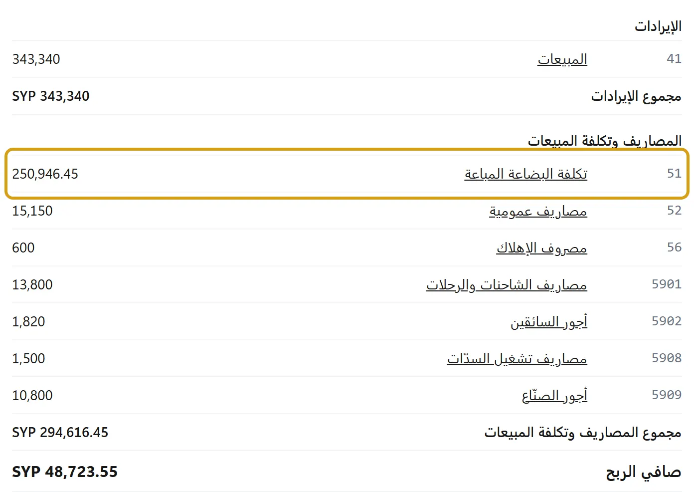

الأرباح تطلع خسارة، أو مصاريف ما سجّلتها
قائمة الدخل تطرح من المبيعات حسابات المصاريف كلها، وبعضها يملؤه البرنامج وحده مع كل عملية، فقد تظهر خسارة في مدة لم تبع فيها شيئاً. هذا الدليل لا يرى دفاترك، والمساعد يراجعها إن سمحت له: ما تحت يقول ما قد يكون السبب، والجواب الأكيد من دفاترك:
- افتح قائمة الدخل (على الجوال الأرباح والخسائر) على المدة نفسها، واضغط سطر الحساب: يفتح دفتره لهذه الأيام، بكل قيد ومستنده، وفي القيد طريق تصحيحه.


- فحص الدفاتر يسمّي ما لا يتفق في الدفاتر، ويقول الحل لكل واحد.
- سطر تحت الربح يقول ما دخله بلا تكلفة معروفة: صافي الربح مو صحيح.
فاتورة واحدة كاتبة خسارة الفاتورة وإنت شايف سعر البيع فوق التكلفة؟ الرقم هو مجموع الفاتورة بعد الخصم، ناقص المرتجعات وإشعارات الدائن، ناقص التكلفة المكتوبة جنبه. والتكلفة ما هي آخر سعر اشتريت فيه: هي متوسط تكلفة الكمية يوم البيع (على الوارد أولاً (FIFO) سعر أقدم دفعة)، فشراء قديم أغلى، أو فاتورة شراء بسعر مكتوب غلط، يرفعها فوق السعر اللي بتتذكره. قارن هالأرقام الثلاثة: مجموع الفاتورة، الخصم، التكلفة. إذا كانت التكلفة أكبر مما لازم، تصحيح التكلفة بيصحّح اللي بقي واللي بينباع بعده، وهالفاتورة بتبقى بتكلفتها. وخسارة جاية من خصم أو مرتجع مو غلط بالحساب.
ما يعنيه كل سطر، وما يصنعه بلا بيع:
- «تكلفة البضاعة المباعة»: ما بعته بتكلفة شرائه، وليست مصروفاً سجّلته: الربح هو المبيعات ناقص هذه. لكن يدخلها بلا بيع في هذه المدة:
- اشتريت ← بضاعة للبيع مسجّلة قبل هذا التحديث: تبقى هنا كما قُيّدت، وتعديلها يبقيها هنا، فلا يصلحها تحديث ولا تُنقل وحدها، ويقولها السطر نفسه تحت الربح. الجديدة لها سطرها: «بضاعة مشتراة بالمبلغ» تحت. - فاتورة شراء لصنف بلا مخزون (خدمة، شحن): تكلفة في يومها، لأنها لا تدخل المستودع. وشحن البضاعة يخرج منها إلى المخزون إن وزّعته بـتكاليف الاستيراد. - «فرق تكلفة المخزون»: بعت قبل أن تسجّل الشراء (الكمية بالسالب)، ثم سجّلت الفاتورة في مدة بعدها: تكلفة ما بِيع تُقيَّد في مدة الشراء، ويقول السطر «… من تكلفة البضاعة عن مبيعات فترة أخرى، سجّلتها فاتورة شراء في هذه الفترة». ليس خطأً: المدتان معاً صحيحتان (كيف). - فرق سعر على ما بِيع: فاتورة جاءت بعد إذن استلام بسعر غير سعره، ويقول السطر «… فرق سعر فاتورة شراء عن بضاعة خرجت من المخزون ببيع أو إنتاج»؛ أو تكاليف استيراد بعد أن بِيع جزء من البضاعة، ويقول السطر «… فرق تكاليف استيراد عن بضاعة خرجت من المخزون ببيع أو إنتاج، دخل في تكلفة البضاعة بتاريخ التكاليف لا بتاريخ خروجها». وكلاهما سطر «فرق تكلفة المخزون» في تقريري المبيعات و«تكلفة البضاعة المباعة» (التقارير). - تعديل سعر فاتورة شراء بعد بيع بضاعتها، أو بيع أو إنتاج بالسالب ثم شراء بسعر آخر: الفرق يُقيَّد بتاريخ الفاتورة لا بتاريخ البيع، ولا يعود إلى شهر البيع، والشهر المقفل لا يُفتح له. ويقول السطر «… فرق سعر فاتورة شراء عن بضاعة خرجت من المخزون ببيع أو إنتاج، دخل في تكلفة البضاعة بتاريخ الفاتورة لا بتاريخ خروجها». - إذن تسليم خرج والصنف ناقص، ثم فاتورة شراء غطّته، ولا فاتورة بيع له (لم يُفوتر، أو ألغيت فاتورته): تكلفته هنا بلا بيع، ويقول السطر «… من تكلفة البضاعة عن بضاعة سُلّمت بإذن تسليم ولم تُفوتر، سجّلتها فاتورة شراء ولا بيع مقابلها بعد». فوتر الإذن فيقف البيع بجانب تكلفته. - مواد دخلت الإنتاج قبل شرائها: أنهِ رغم نقص المواد ثم فاتورة الشراء. تكلفتها هنا بلا بيع، والمنتج في المخزون بلا قيمة، ويقول السطر «… من تكلفة البضاعة مواد دخلت الإنتاج قبل شرائها («أنهِ رغم نقص المواد»)، فالمنتج دخل المخزون بلا قيمة». سجّل الشراء قبل إنهاء الأمر تدخل التكلفة في المنتج. عكس الأمر أو إرجاع الشراء في المدة نفسها يزيل التكلفة والسطر معاً؛ وعكس الأمر بعد قفل مدته يُقيَّد في المدة المفتوحة، ويقول سطرها «… رجعت من تكلفة البضاعة بعكس أمر إنتاج سجّلتها فاتورة شراء في فترة سابقة». - أكبر من المبيعات ولا شيء مما سبق؟ تكلفة صنف خاطئة (تكلفة بالدولار كُتبت قبل 0.1.47 فصارت ليرات، أو فاتورة شراء بسعر خاطئ): صحّحها بـتصحيح التكلفة: يصحّح ما بقي وما يُباع بعده؛ ما بيع قبله يبقى بتكلفته، فلا يتغيّر الربح الذي تراه الآن (طريقه). وربح الفاتورة تحت كل فاتورة بيع يريك أيها بيع بأقل من تكلفته.
- «بضاعة مشتراة بالمبلغ»: اشتريت ← بضاعة للبيع في العمليات اليومية (على الجوال بضاعة للبيع في مصروف). هنا أربعة أشياء مختلفة، ويقولها كلها سطر تحت الربح يبدأ «… بضاعة مشتراة بالمبلغ من «اشتريت» بضاعة للبيع»:
- خروج المال: الثمن خرج من الصندوق إن دفعته نقداً، وإلا فهو دين للمورد. هذا ما يقوله دفتر الصندوق، وليس ربحاً ولا خسارة. - تسجيل المصروف: المبلغ كله يُسجَّل يوم الشراء في سطر «بضاعة مشتراة بالمبلغ»، بعت أم لم تبع. - تكلفة المخزون: البضاعة لا تدخل المخزون، فلا قيمة لها فيه ولا تكلفة تُطرح عند بيعها، ولو كانت على الرف. - صافي الربح: ينقص صافي الربح بالمبلغ كله في يومه، ولا يمسّ مجمل الربح لأنه ليس تكلفة بيع. من اشترى بـ 21,000 ولم يبع يرى مجمل الربح 0 وصافي الخسارة 21,000: مال خرج وبضاعة على الرف لا يراها الحساب، لا خسارة في البيع. - ما سُجّل من قبل: يبقى كما قُيّد، ولا يصحّحه تحديث. وما بعته بـبعت يبقى في مجمل الربح كله بلا تكلفة، ويقوله السطر نفسه: «… من المبيعات بلا تكلفة مسجّلة». وتصحيح قيد قديم منها بعد القفل يدخل المدة المفتوحة ربحاً بلا بيع: «… رجعت إلى الربح بتصحيح «اشتريت» بضاعة للبيع سُجّلت في فترة سابقة». ما سُجّل منها قبل هذا التحديث في «تكلفة البضاعة المباعة» يقوله السطر إن زاد على ما سجّلته بـبعت، بالأربعة نفسها: «… من تكلفة البضاعة سُجّلت من «اشتريت» بضاعة للبيع بالمبلغ»، وهناك ينقص مجمل الربح أيضاً. لتدخل البضاعة المخزون سجّلها فاتورة شراء بدل ذلك، وما سُجّل خطأً يُلغى.
- «مصاريف عمومية»: سحب من الصندوق في الوردية بغرض مصروف. مال أخذته للبيت غرضه سحب شخصي، وما أودعته في البنك أو صندوق آخر غرضه إيداع: كلاهما ليس مصروفاً. سحب قديم سُجّل مصروفاً وهو غير ذلك؟ لمن له المحاسبة: ألغِه من قيده بسبب (القيد تحت السحوبات في تقرير الوردية)، ثم سجّله كما يجب. ويدخلها أيضاً مصروف من اشتريت أو سند صرف، واستعمال داخلي من بضاعة للمحل، والرواتب.
- «فروقات الجرد»: جرد عدّ أقل مما في الدفاتر، أو تصحيح تكلفة لبضاعة دخلت بشراء: يحرّك ربح الشهر الذي صحّحت فيه، بلا بيع. ويقوله سطر تحت الربح: «… دخلت الربح بلا بيع: فرق «تصحيح التكلفة» على بضاعة دخلت بشراء» أو «… نقصت من الربح بلا بيع: …». أما تصحيح بضاعة أول المدة فيذهب اليوم إلى رأس المال بلا ربح ولا خسارة، وتصحيح قديم يبقى هنا كما قُيّد. بضاعة أول المدة تُدخل بـبضاعة أول المدة لا بالجرد. وجهاز يبيع من مستودع غير مستودع الرف يصنع عند الجرد نقصاً لم يحصل: جهازان في شركة واحدة. وعلى الوارد أولاً (FIFO)، جرد خاطئ صحّحته بجرد ثانٍ يترك فرقاً: العجز خرج بسعر أقدم دفعة والزيادة دخلت بمتوسط التكلفة، ويقول السطر «… من فروقات الجرد جرد صحّح جرداً قبله»، ولو كان الجرد الأول في شهر قبله: يقولها شهر الجرد الثاني.
- «تسويات أسعار المشتريات»: إشعار على فاتورة شراء. يدخل الربح كله يوم تسجيله، ولو كانت البضاعة ما زالت على الرف، وتكلفتها في المخزون لا تتغيّر، ولا يوزَّع عليها: إشعار يزيد ما علينا خسارة بلا بيع، وخصم من المورد ربح بلا بيع. ويقوله سطر تحت الربح: «… زيادة من مورد على فاتورة شراء نقصت من الربح يوم الإشعار كاملة، ولو كانت بضاعتها على الرف»، أو «… تخفيض من مورد على فاتورة شراء دخل في الربح يوم الإشعار كاملاً، ولو كانت بضاعته على الرف». وإن أرجعت بعد الإشعار بعض بضاعة الفاتورة أخذ المرتجع حصته من الإشعار في يومه، ويقوله سطر غيره: «… نقصت من الربح بمرتجع مشتريات على فاتورة عليها إشعار من المورد: أخذ المرتجع حصته من الإشعار يوم المرتجع».
- «عجز وزيادة الصندوق»: فرق إغلاق الوردية بين ما عددته والمتوقع، وفرق الرصيد الافتتاحي في الصندوق عن الدفاتر حين وافقت عليه عند فتح الوردية. مال أدخلته للشركة وكتبته في الرصيد الافتتاحي دون رأس مال يظهر هنا زيادة. الفرق الخطأ يُعكس من تقرير الوردية بـعكس قيد الفرق.
- «مصروف الإهلاك»: ترحيل الإهلاك لكل أصل ثابت، كل شهر، بلا بيع. «أرباح وخسائر بيع الأصول»: استبعاد أصل بثمن غير قيمته الدفترية.
- «خصومات مسموحة»: خصم الفواتير. «التالف والهدر» و«تكاليف الكفالة»: ما أخرجته تالفاً أو قطعاً بالكفالة. «فروق صرف»: من أين جاء. «فروقات التقريب»: قروش تقريب الصندوق.
- حساب إيراد أو مصروف في ملف Excel: الأرصدة الافتتاحية لم تعد تقبل هذا السطر، وما سجّلته بها قبل هذا التحديث يبقى ويظهر خسارة أو ربحاً وأنت لم تبع. ألغِ قيد ذلك السطر من دفتر الحساب، فأرباح ما قبل سيرو تبقى في رأس المال.
- رأس المال وبضاعة أول المدة والسحب الشخصي ليست أرباحاً ولا مصاريف: تظهر في الميزانية.
- «خسارة الفاتورة» وأنت لم تبع شيئاً بعد: هذا السطر يظهر تحت مجموع فاتورة بيع أثناء كتابتها، قبل حفظ، ولا شيء مسجَّل بعد: يقول إن سعر ما كتبته أقل من تكلفة الصنف، أو إن السعر ما زال صفراً فيظهر مبلغ التكلفة كله. اكتب السعر الصحيح فيتغيّر، أو اخرج من الفاتورة بلا حفظ فلا يبقى منها شيء.